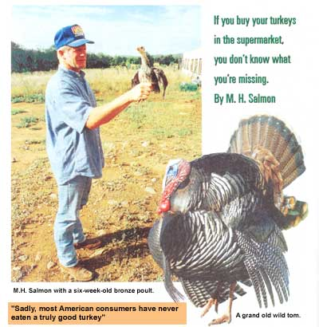
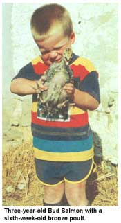
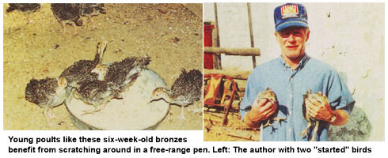
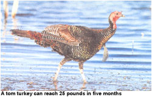

COUNTRY SKILLS
With the holiday season approaching, everyone from the modern-day homesteader to the everyday consumer is thinking about that quintessential holiday bird, the turkey. This big goofy-looking avian is still the oven favorite for those two big events Thanksgiving and Christmas-that come along less than a month apart.
You can, of course, go down the road to your nearest chain supermarket and buy a bird, ready for roasting. But hear me out: once you know the truth about that supermarket turkey, you may not want to feed one to your dog, let alone your family. What's the alternative? A free-range bird you raise yourself.
This article is for the beginner who would like to raise a few turkeys for a superb holiday feast, with maybe a bird or two left over to give away, sell, or barter. I suggest you start with at least two or three birds-not more than a dozen. Turkeys like company; a lone young bird will not be happy, and it's not unusual to lose one, especially when they're little. Also, several young birds will stimulate a mild competition at the feeder, prompting each to eat, and thus grow, more. On our place, a semirural five acres in southwest New Mexico, we have raised six to ten birds the last few years, resulting in some great turkey dinners and a good profit from the extra birds. The usual practice on a small acreage is to buy several young birds, called poults, in late May or June, raise them for about five months, then dress them out before Thanksgiving or Christmas.
You can begin with poults that are just hatched or with so-called "started" birds that have feathered out and are three to four weeks old. The just-hatched birds will need special care for the first few weeks and will require a brooder.
There are books (see bibliography) that give detailed instructions on how to build brooders, or you can buy them from feed stores or poultry supply catalogs. A chicken brooder will work fine for young turkeys, but fewer will fit in each brooder. For just a few birds, the simplest brooder can be fashioned by hanging a heat or infrared lamp from the ceiling of the barn, shed, or cellar where your birds are confined. For the first week, the standing temperature, measured about two inches off the floor, should be maintained at 90°F to 95°F. The temperature should be lowered about 50°F each week thereafter until the birds are feathered out at about four weeks, at which time, assuming it's summer, you can dispense with the brooder and your birds can start to spend some time outside. You lower the temperature by raising the lamp a few inches each week, checking periodically with a good thermometer to make sure the temperature is in the right range. The young turkeys will tell you a lot about whether or not your temperature is right. If they're all crammed into the center directly under the light, it's too cold. If they're all out on the edge avoiding the light, it's too hot. If they're scattered about under the light, moving about and feeding, they like your homemade brooder just fine.
Day-old poults may be so infantile and so distracted by being shipped from the hatchery to you that they need help finding and learning how to use the feed and water. For this reason, avoid day-old poults. The usual sequence is for a goodly number of poults to be shipped from the hatchery to a local feed store or similar retail outlet, whence they are sold in smaller quantities to someone like you. This makes good sense. From the feed store, buy a few poults that are at least several days old. The weaklings will have been weeded out and the poults should already be eating well. Or do as I do and buy the three- to four-week-old started birds mentioned earlier. They cost a little more-about $4 apiece as opposed to $2 apiece for day-old poults, but with started birds you avoid the hassle of having to worry about a brooder and you avoid the sensitivities inherent in very young birds.
The three dominant commercial strains of turkey are the broad-breasted bronze, the broad-breasted white, and the Beltsville small white. Toms (male turkeys) of the first two strains can easily reach 25 pounds in five months; the Beltsville variety is similar in conformation but achieves, on average, only one-third the size. And for all turkeys, the hens are about one-third smaller than the toms.
I have never tried the Beltsville small white strain, but I have raised both the large bronze and large white birds. The main difference that I can see between the two is in the color of the feathers. However, we did raise one large white tom who got so breast-heavy he couldn't walk. We had to dress him out a month before the other birds.
You can raise turkeys one of three ways: confined, free-roam, or free-range. Confined birds are raised to slaughter in some sort of cage or other small enclosure. I say, "Why bother?" You might just as well go down the road to the supermarket and buy a commercial bird raised the same way. Freeroam is a fairly new poultry term used to describe birds raised indoors but within a large enclosure like a barn or warehouse, where they can roam around. These birds get some exercise, one key component to a savory roaster, but they get no sunshine. Nor do they have the opportunity to forage like a wild bird. Free-range produces the best turkeys and it is the way to go for the small-scale turkey raiser. These birds have a pasture or yard to range over, they get exercise, fresh air, and sunshine, can scratch around for bugs, worms, weed seeds, and the like, and are generally healthier, happier, more savory birds.
Even the free-range bird, however, needs shelter and fencing to keep him out of the garden and safe from predators. Standard woven-wire six-foot-high poultry fencing makes the cheapest, most effective enclosure. For lots of turkeys, you'll want to fence in several acres; for just a few, you can get by with something the size of a backyard or city lot-just a piece of natural ground where a turkey can forage around and be a bird.
Any sort of barn, shed, or coop will serve as a shelter. It needn't be large, since the birds have an outdoor area for exercise. With rare exceptions, it needn't be heated or cooled, just a well-ventilated place where the birds can get out of the rain, sun, or wind. This shelter should provide the birds free access to the fenced-in pasture. Keep the turkey feeder inside this shelter so food stays dry, and provide a rounded stick or branch about an inch in diameter and a foot off the ground for a perch.
There are three feeding stages to raising a turkey. The "starter" phase runs from birth to eight weeks, during which time the basic ration is a 26% to 28% protein poultry feed. The "grower" phase runs from eight to 16 weeks, when the basic ration is a 20% to 22% poultry feed. The "finishing" stage runs from 16 weeks to 24 weeks, with a basic ration of approximately 16% poultry feed. During the starter phase, it is best to feed the young birds their poultry feed in mash form. After that, the birds are large enough to eat poultry feed in a pellet form. I always feed the mash in a tray, dish, or feeder of some type to keep it off the ground. With pellets, I put some in the feeder and some on the ground, where the birds can scratch at them and pick them up with some natural grit. Let them eat as much as they want.
Along with prepared feeds, the birds will benefit from various supplemental feeds. Some of this the birds will get by scratching around: bugs, worms, and weed seeds. You can add grass clippings, alfalfa hay, and table scraps; little should go to waste with these big birds around.
From eight weeks on, it is also appropriate to scatter some grain-corn, oats, milo, or a mixed bag of "scratch-on the ground for the birds. This feed variety will yield a more savory bird, but it's important to remember that this is all supplement. Because of their rapid growth rate, your turkeys' basic diet should be a prepared high-protein feed.
Both chickens and turkeys will digest their feed better with some prepared grit. The usual is oyster shell, available at most feed stores; scatter some around with the prepared feed. Keep in mind that a freerange bird is not necessarily an "organic" bird. (I think of organic poultry as birds raised on feed grown without any herbicides, pesticides, or commercial fertilizers.)
Like any other farm animal, turkeys need clean fresh water available at all times. Feed stores and poultry supply catalogs sell portable automatic waterers constructed so that the young birds won't fall in and drown.
At somewhere between 20 and 26 weeks (24 being the most common) it is time to kill, dress, and prepare your turkeys. I would never claim that butchering is fun but of all the farm and game animals I've butchered over the years, I have found turkeys the easiest. I have never gotten attached to a turkey. And a turkey will "come clean" easier and faster than other animals. Though just part-time homesteaders, last Thanksgiving my wife and I had six turkeys killed, dressed out, and ready for the freezer in two hours. With the first bird, you will feel slow and uncertain (and perhaps a bit squeamish). But with a little practice, this will seem like a routine farm chore.
The procedure is messy. I always wear rubber boots and a pair of coveralls. Beyond that, here are the basic tools to do the job:
small very sharp knife (I use a skinning knife)
large very sharp knife (I use a hunting knife)
sharpening stone
pruning shears
pliers
several feet of 1/2-inch nylon rope
plastic sacks
10- to 20-gallon metal bucket source of running water and a hose source of heat to bring water to 140°F wooden table or cutting
board kitchen thermometer
The night before you plan to dress out Your turkeys, herd them into their coop or some small enclosure. Give them water but no food. This will make them easier to catch the next morning, and by withdrawing food for 12 hours, their crops and stomachs will he empty.
The next morning, heat water to 130°F to 140°F in a metal container big enough to dunk a large tom turkey. A 10-to 20-gallon garbage can works well. You can heat the water over an outdoor gas grill or wood fire, or else you can use an indoor stove and then move the container outside once the water is hot enough.
Make a slip loop in one end of your 1/2- nylon rope and hang the loop from a rafter, beam, or branch of a tree. Next, go get one of your turkeys. Carry the bird by the feet and tucked under your arm to prevent flapping. Hang the bird by the feet from the slip loop. Take hold of the head, straighten the neck and bring it taut, and with your large sharp knife, sever the head from the neck. Let the carcass bleed out. This will take several minutes and, yes, the carcass will flap, though the creature is long since senseless.
Remove the bled-out carcass from the loop, take it by the feet, and dunk it in the hot water. Slosh it around some to make sure the water gets down to the skin. if the water temperature is 140°F, dunk for not more than 30 seconds; if it's 130°F, dunk for about 60 seconds. Be conservative with the dunking; you don't want to burn the skin and you can always redunk the bird to loosen more feathers. Lay the carcass on your work table and hand-pluck the bird. Most of the feathers will come off in clumps and sheets. The larger wing feathers and pin feathers will take longer and a few may need to be pulled individually with the pliers. Redunk the bird a time or two if needed.
Once the bird is plucked, lay it out on the table with the back up. With your small sharp knife, slit the skin down the back of the neck to the base of the neck between the wings. Cut the skin away from the neck and you will now have access to the windpipe, gullet, and crop. Using the knife and pruning shears as needed, remove the windpipe,. gullet, and crop, and cut off the neck at the base of the body.
Turn the bird around. At the base of the tail is a nub of oily, fatty tissue. Cut it off. With the knife and pruning shears, cut off the feet at the hock joint (this is the joint a few inches above the feet). Next, use the knife to open the vent enough to put your hand inside the bird and pull out the insides. With some dexterity and care, you can do this without breaking into the stomach or intestines. Removal of the innards will take more than one pull, but in time you will have the guts, stomach, heart, liver, lungs, and everything else out on the table. Carefully cut the gall bladder away from the liver (the fluid in the gall bladder will sour any meat it touches) and save the liver. Save the heart, too. Use a hose to get the inside of the bird squeaky clean.
It's important to hang and cool the bird at 30°F to 50°F for about 12 hours before you freeze or eat it. This cooling process will yield a more tender turkey. If it's too warm to hang the bird, cool it for 12 hours in a refrigerator. Don't be surprised if the first bird you dress Out ends up looking a little ragged. You will learn an awful lot about the anatomy of a turkey with that first dressing out, and you will be both quicker and neater with your next bird.
Assuming you've raised more than one bird, you may have one or more to give away, barter, or sell. The latter can be tricky. It is legal anywhere to sell someone a live turkey, but if you sell someone a dressed-out bird, you may run afoul of various local, state, or federal meat-packing laws. As a practical matter, selling a few prepared birds to people you know is seldom a problem; it has never been a problem for us. But if you intend to advertise or sell prepared birds on the open market, you will need to become an approved processor or sell your live birds to someone who is.
Factory-farmed turkeys in the supermarket usually sell for under $1 per pound at Thanksgiving time. But people will pay much more for a superior bird. We're not in the turkey business, but we have friends waiting in line to buy a bird each Thanksgiving. The price? Two dollars per pound, dressed out.
There is profit in such a bird. A torn turkey will consume about 75 pounds of feed by 24 weeks. At today's feed prices, that's about $11 worth of feed. Add $4 for the purchase of a started bird and the cost is about $15 at slaughter. Such a bird will dress out at roughly 20 pounds. At $2 per pound, the bird sells for $40. You do the math. One of our birds last year dressed out at 32 pounds! A family paid $64 for the bird, and after tasting their purchase made us promise to raise them another this year. Once you have raised and roasted one of your own free-range turkeys, you'll know why.
Today's domestic turkey is a direct descendent of the wild turkey that Native Americans found in good abundance over a broad range of habitat in North America. Among the Native Americans who at least partially domesticated the wild turkey was the Aztec tribe of southcentral Mexico. I say "partially" because the Aztecs did little in the way of selective breeding; they simply corralled some wild turkeys, clipped their wings, and raised some birds for the stew pot.
When the Spanish conquistadores took over the Aztec nation, they brought some of these semiwild turkeys back to Spain. These birds were bred and disseminated, and as domesticated turkeys, their descendants gradually populated other areas of Europe. As settlers from northern Europe began to homestead America, they brought their domestic turkeys with them, thus completing an odd circle of turkey breeding and dispersal. Until the twentieth century; however, these domestic birds were little different in conformation from the wild turkeys that were already here (and which, by 1900, had been hunted close to extinction).
A key figure in the development of the modern big-bodied domestic bird was an Englishman named Jesse Throstle. He came to Canada in the 1930s and, through selective breeding, developed a stocky wide bodied bird with lots of breast and leg muscle in relation to bone size. Modern commercial breeders have further developed this trend. Where the wild turkey and the early domestic variety were athletes and good flyers, the modern meat bird is cumbersome and can scarcely get off the ground. But he has a remarkable ability to convert feed into muscle and protein and can yield a sizable feast in a matter of months.
All the commercial strains of turkeys can produce either a savory feast or a very inferior quality of meat, depending almost entirely on what they eat and how they are housed and raised. Sadly, most American consumers have never eaten a truly good turkey. To explain why this is so, I need to take you to the supermarket and borrow some information from a public personality named Jim Hightower.
Yes, this is the same Jim Hightower who is currently a popular radio talk show host. What does this media gadfly know about turkeys? Well, for most of his career, Hightower's profession was agricultural economics. He was the Texas commissioner of agriculture for two terms, and he has written books and articles exposing some of the unsavory practices of agribusiness.
In a book published last year, There's Nothing in the Middle of the Road but Yellow Stripes and Dead Armadillos (HarperCollins), Hightower takes on the factory farming of turkeys. The modern supermarket turkey, Hightower reports, is derived almost entirely from huge breeding flocks of broad-breasted white birds owned by a handful of mega corporations, including ConAgra Inc., producers of the Butterball variety. The birds are so breast-heavy, and are so closely confined, that they are unable to breed and are barely able to walk. The breeding is accomplished by artificial insemination. Walking for these birds is superfluous; they don't need to walk. They just eat while squatting, day and night, bunched wing tip to wing tip, in front of food bunkers in assembly-line fashion. The close confines of such "farming" produce I an environment ripe for disease and infection. As Hightower reports, "Factory-produced animals now receive an average of about 30 times more antibiotics than people do. But since residues of these drugs can end up in the meat, you can end up as doctored as the turkey, getting an unexpected dose of antibiotic with every bite of Butterball you eat."
As bad, or worse, Hightower notes, "The poor bird is injected after slaughter with vegetable oil, water, salt, emulsifiers (mono- and diglycerides), sodium phosphate, annoto color, and artificial flavors."
These measures produce a low-cost turkey that looks good, with its oversize breast and artificiaIly blanched white meat but it lacks what you really want from a turkey: flavor and nutrition.
Various species and subspecies of the wild turkey now occupy appropriate habitat in most of the lower 48 states. This is one of the great wildlife conservation and recovery stories of the twentieth century, with the wild turkey going from scarce to widespread and plentiful in a matter of decades. With turkeys, it is usually the toms, or gobblers, that are legal game during a fall and sometimes a spring hunting season.
This is a remarkably challenging game animal. Wild turkeys have great vision and are extremely wary. Unlike other game birds, you don't go tromping through the woods then try to shoot a bird as it flushes into the air. Nor do hunters commonly stalk the birds, since it's virtually impossible to sneak up on one. Turkey hunting means turkey calling.
Even before the season opens and while unarmed, you scout for turkey signs. No other bird in the woods leaves a track like a turkey, and their scratching and foraging is distinctive as well. Once you have located the range of one or more flocks, you gear up for the season.
A 12-gauge, 16-gauge, or 20-gauge shotgun is the usual choice, full choke since you shoot them on the ground and aim for the head. Other options include a bow or a muzzleloader. Everything must be camouflaged, not just your clothes (camo coveralls are the usual choice), but also your gun, face, and hands.
The morning of the hunt, you sneak into turkey range before dawn and set up where you can see but can't be seen. Then, with first light, you try to call in a gobbler. Hunters use a variety of hand-held or mouth-blown calls to try to imitate a variety of turkey sounds-the cluck, yelp, cackle, gobble, purr, etc.-in an attempt to stimulate, challenge, or arouse a big tom turkey to come within range: inside 40 yards.
If you get one, you have achieved a major accomplishment in big-game hunting and you take home a 15-pound to 25-pound feast to boot, with more dark meat than your free-range domestic bird but just as good.
Contact your state's fish and game department for all the rules and more information.
BIBLIOGRAPHY/INFORMATION
Raising Small Meat Animals by Victor
Giammattei, DVM (The Interstate Publishers).
Raising Your Own Turkeys by Leonard
Mercia (Storey Communications).
Hunting the American Wild Turkey by Dave
Harbour (Stackpole Books). One of many good books on turkey hunting.
Cabela's (catalog sales), I Cabela Drive,
Sydney, NE 69160,1-800-237-4444. Sells gear for turkey hunters.
|
 |
 |
 |
|
 |
|
|